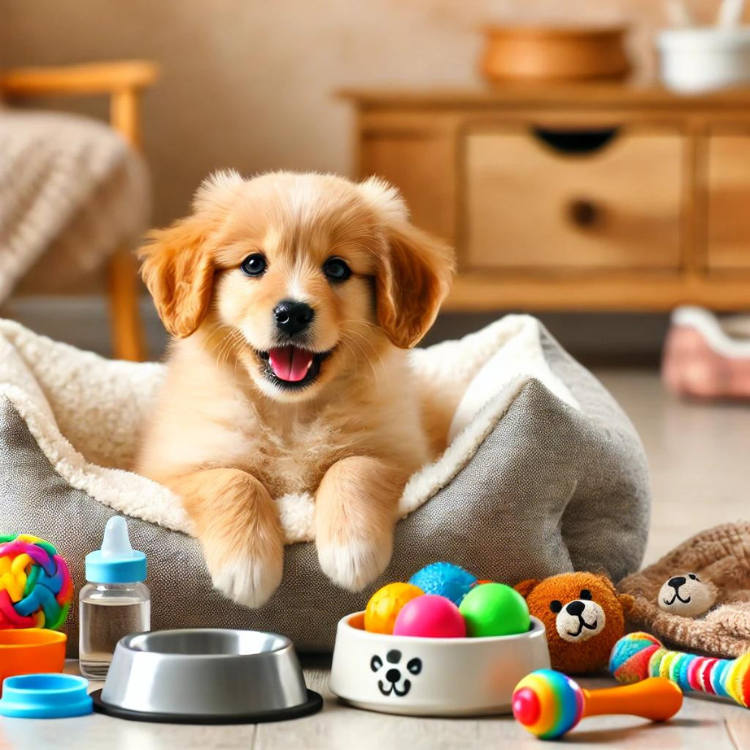

新手狗主人必看！照顧幼犬的必備指南：技巧與產品推薦

幼犬是非常可愛且討人喜愛的家庭成員，讓許多人渴望從牠們還小的時候開始養育。然而，像新生兒一樣，幼犬需要小心呵護，以確保牠們的健康和福祉。牠們的前幾個月對未來健康成長至關重要。本指南將為新手狗主人提供幼犬的照護技巧及產品推薦，讓你能給予幼犬最好的生活起點。
哺乳期（出生至1個月）
在生命的第一個月，新生幼犬完全依賴母親的照護和哺乳。此時的幼犬還未發育完全，因此無法自行維持體溫或消化固體食物。如果無法獲得母乳，飼主需特別注意人工哺育，以確保牠們的需求得到滿足。
1. 哺乳期幼犬應該吃什麼？可以喝牛奶嗎？
- 母乳：理想情況下，幼犬應該飲用母乳，因為它含有對幼犬免疫系統發育至關重要的營養素和抗體。母乳提供天然的保護力，幫助幼犬抵抗早期的感染風險。
- 幼犬專用奶粉：如果沒有母乳，建議選擇幼犬專用奶粉。切勿餵食牛奶，因為牛奶中的乳糖容易導致幼犬消化不良，甚至引發腹瀉。專用奶粉含有合適的營養成分，能滿足幼犬的成長需求，且更容易被消化。
2. 如何餵食一個月以下的幼犬
- 每日攝取量：幼犬每天約需180ml/kg的奶量，建議分多次餵食，以免過多攝入導致消化問題。可以根據幼犬的體重來調整餵食量，並遵循每3-4小時餵食一次的頻率。
- 餵食方式：使用適合幼犬的小孔奶瓶，保持幼犬自然餵食的姿勢，頭部略微抬高，避免嗆到。奶瓶的奶孔不宜過大，以防奶水流速過快造成幼犬窒息。
3. 幫助幼犬排尿和排便
三週以下的幼犬無法自行排尿和排便，這是因為牠們的消化系統和神經系統還未完全發育成熟。飼主可以用溫熱的濕紙巾輕柔按摩幼犬的肛門和尿道，模擬母犬舔舐的動作，幫助幼犬排尿和排便。此步驟對於維護幼犬的消化健康至關重要。
斷奶期（1至2個月）
約在一個月左右，幼犬開始長牙，這時可以逐步引入固體食物，讓牠們適應新的食物結構。斷奶期是從完全依賴液體飲食過渡到固體食物的關鍵時期，應該逐步進行，以減少消化系統的負擔。
1. 斷奶食品推薦
- 肉泥：軟且易消化，可以與奶粉混合後餵食，有助於幼犬逐步適應固體食物的口感和質地。
- 泡軟的乾糧：選擇高蛋白、低碳水化合物的幼犬乾糧，用水或奶粉泡軟後餵食，讓幼犬慢慢習慣咀嚼。
- 幼犬罐頭食品：富含營養的濕糧，適合學習吃固體食物的幼犬。罐頭食品口感柔軟，適合正在長牙的幼犬。
2. 斷奶過渡指南
- 逐步引入：從少量的斷奶食品開始，與奶粉混合餵食，觀察幼犬的適應情況，隨著牠們逐漸接受固體食物，逐步減少奶粉比例，最終完全過渡到固體食物。
- 觀察消化情況：如果幼犬出現消化不良的跡象，例如腹瀉或嘔吐，應減少固體食物的量，讓牠們有更多時間適應，並逐步再次引入固體食物。
3. 驅蟲和疫苗接種
- 驅蟲：幼犬的第一次驅蟲應在2-3週大時進行，隨後遵循獸醫建議進行定期驅蟲，預防內部寄生蟲。
- 疫苗接種：第一次疫苗接種應在幼犬6-9週之間，隨後需進行多次追加接種，通常在16週左右完成最後一次，以建立完整的免疫力。
成長期（3至9個月）
此階段是幼犬快速成長的時期，牠們開始換牙，身體和行為逐漸趨於成熟。良好的照護對於幫助幼犬發展強壯的骨骼、牙齒和健康的生活習慣至關重要。
1. 換牙護理
- 換牙的挑戰：幼犬在換牙期會感到牙齦不適，通常會想要咀嚼東西以減輕不適感。此時為幼犬提供安全的咀嚼玩具非常重要，避免牠們啃咬家具或其他危險物品。
- 推薦咀嚼玩具：選擇耐用、無毒的咀嚼玩具，有助於舒緩牙齦不適，同時滿足幼犬的啃咬需求，並有助於預防破壞性行為的發生。
2. 幼犬飲食
- 均衡營養：幼犬需要高品質、營養均衡的食品，尤其是含有豐富蛋白質、維生素和礦物質的食物，以支持牠們的健康成長。飼主應選擇適合幼犬年齡和品種的專用食品。
- 餵食頻率：成長期的幼犬需要高頻次的餵食，通常每天3-4次，這樣可以保持穩定的能量供應，幫助牠們健康成長。
3. 避免常見的飲食錯誤
- 自製食物的風險：許多自製食物可能無法提供幼犬所需的完整營養，建議選擇經過科學配方的商業幼犬食品，確保營養的均衡。
- 過量鈣補充：過多的鈣會影響幼犬骨骼發育，導致關節問題，應避免額外添加鈣補充劑，僅選擇鈣含量適中的幼犬食品即可。
小結
哺乳期、斷奶期和成長期是幼犬成長過程中的重要階段，每個階段的照護都需依照幼犬的生理需求來進行調整。從母乳到固體食物的逐步過渡，再到成長期的換牙與營養補充，飼主需密切觀察幼犬的狀態，適時調整飲食和護理方式，才能幫助幼犬健康成長。特別是在飲食方面，應避免給予不適合的食物，例如牛奶或過量的鈣，並選擇專業的幼犬食品來滿足成長需求。隨著幼犬逐漸成長，持續的健康管理和耐心的照顧會為牠們的未來生活奠定良好的基礎。
產品推薦
這裡有一部分是來自Amazon的推薦產品，幫助你照顧新生的幼犬。這些鏈接可能包含聯盟行銷計劃，透過點擊並購買，我們可能會獲得一小部分佣金（對你不會產生任何額外費用），幫助我們維持網站的運營。
1. 食物和水碗
2. 高品質幼犬食品
- 推薦：請咨詢你的獸醫，選擇最適合你幼犬需求的食品品牌。
3. 舒適的狗床
4. 幼犬尿墊
5. 狗籠或圍欄
6. 玩具
7. 安撫玩具
結論
養育一隻幼犬是充滿樂趣且值得的旅程，但也伴隨著許多責任。確保幼犬獲得正確的營養、照護和訓練，對牠們的成長至關重要。透過使用合適的產品並遵循專家建議，你可以確保幼犬健康快樂地成長，並成為你一生的好夥伴。
更多文章